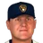
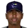

Record Book single-season and career, league-wide and by franchise
Read this first: seasons 1871–2001 are real MLB history that shipped with the OOTP file, mapped by OOTP onto this universe's 30 original franchises (club names as they were that season). 2002 is this universe, season to date (top tiers: MLB, ABL, FBL). Player names are as the export stores them; OOTP gives some historical players generated names.
Top-tier records only (MLB history plus this year's three top tiers). A season is a player's full year in one league, stints combined; the team shown is where he played the most games. Rate records need 3.1 PA or 1 inning per game of that year's longest schedule (career: 3,000 PA or 1,000 IP). • marks a player active in this universe.
Home runs
Hits
RBI
Runs
Stolen bases
Doubles
Triples
Walks
Total bases
| # | Player | Season | Team | Total bases |
|---|---|---|---|---|
| #1 | 1921 |  New York Yankees New York Yankees | 457 | |
| #2 | 1922 |  St. Louis Cardinals St. Louis Cardinals | 450 | |
| #3 | 1927 | New York Yankees | 447 | |
| #4 | 1930 |  Philadelphia Phillies Philadelphia Phillies | 445 | |
| #5 | 1932 |  Philadelphia Athletics Philadelphia Athletics | 438 | |
| #6 | 1948 | St. Louis Cardinals | 429 | |
| #7 | 2001 |  Chicago Cubs Chicago Cubs | 425 | |
| #8 | 1930 | Chicago Cubs | 423 | |
| #9 | 1932 | Philadelphia Phillies | 420 | |
| #10 | 2001 |  Arizona Diamondbacks Arizona Diamondbacks | 419 |
Batting average qualified
| # | Player | Season | Team | Batting average |
|---|---|---|---|---|
| #1 | 1871 | Philadelphia Athletics | .492 | |
| #2 | 1894 |  Boston Beaneaters Boston Beaneaters | .440 | |
| #3 | 1887 |  St. Louis Browns St. Louis Browns | .435 | |
| #4 | 1872 | Boston Red Stockings | .432 | |
| #5 | 1871 | Boston Red Stockings | .431 | |
| #6 | 1876 | Chicago White Stockings | .429 | |
| #7 | 2002 (MLB) | St. Louis Cardinals | .429 | |
| #8 | 1901 | Philadelphia Athletics | .426 | |
| #9 | 1873 | Boston Red Stockings | .425 | |
| #10 | 1897 | Baltimore Orioles | .424 |
On-base % qualified
| # | Player | Season | Team | On-base % |
|---|---|---|---|---|
| #1 | 1941 |  Boston Red Sox Boston Red Sox | .550 | |
| #2 | 1899 | Baltimore Orioles | .546 | |
| #3 | 1923 | New York Yankees | .543 | |
| #4 | 1920 | New York Yankees | .532 | |
| #5 | 1957 | Boston Red Sox | .526 | |
| #6 | 1894 | Philadelphia Phillies | .521 | |
| #7 | 2001 |  San Francisco Giants San Francisco Giants | .515 | |
| #8 | 1926 | New York Yankees | .514 | |
| #9 | 1954 | Boston Red Sox | .513 | |
| #10 | 1957 | New York Yankees | .512 |
Slugging % qualified
| # | Player | Season | Team | Slugging % |
|---|---|---|---|---|
| #1 | 2001 | San Francisco Giants | .863 | |
| #2 | 1920 | New York Yankees | .849 | |
| #3 | 1921 | New York Yankees | .846 | |
| #4 | 2002 (FBL) |  Richmond Flying Squirrels Richmond Flying Squirrels | .777 | |
| #5 | 2002 (MLB) | New York Yankees | .776 | |
| #6 | 1927 | New York Yankees | .772 | |
| #7 | 1927 | New York Yankees | .765 | |
| #8 | 1923 | New York Yankees | .764 | |
| #9 | 1925 | St. Louis Cardinals | .756 | |
| #10 | 1998 | St. Louis Cardinals | .752 |
OPS qualified
| # | Player | Season | Team | OPS |
|---|---|---|---|---|
| #1 | 1920 | New York Yankees | 1.381 | |
| #2 | 2001 | San Francisco Giants | 1.379 | |
| #3 | 1921 | New York Yankees | 1.357 | |
| #4 | 1923 | New York Yankees | 1.307 | |
| #5 | 1941 | Boston Red Sox | 1.285 | |
| #6 | 1927 | New York Yankees | 1.257 | |
| #7 | 1957 | Boston Red Sox | 1.257 | |
| #8 | 1926 | New York Yankees | 1.251 | |
| #9 | 1924 | New York Yankees | 1.250 | |
| #10 | 1925 | St. Louis Cardinals | 1.242 |
WAR (OOTP)
| # | Player | Season | Team | WAR (OOTP) |
|---|---|---|---|---|
| #1 | 1921 | New York Yankees | 13.9 | |
| #2 | 1920 | New York Yankees | 13.9 | |
| #3 | 1923 | New York Yankees | 13.8 | |
| #4 | 1946 | Boston Red Sox | 12.7 | |
| #5 | 1942 | Boston Red Sox | 12.5 | |
| #6 | 1941 | Boston Red Sox | 12.4 | |
| #7 | 2001 | San Francisco Giants | 12.2 | |
| #8 | 1927 | New York Yankees | 12.1 | |
| #9 | 1924 | New York Yankees | 12.0 | |
| #10 | 1915 |  Detroit Tigers Detroit Tigers | 12.0 |
Wins
Strikeouts
Saves
Innings
| # | Player | Season | Team | Innings |
|---|---|---|---|---|
| #1 | 1879 |  Cincinnati Reds Cincinnati Reds | 680.0 | |
| #2 | 1884 | Providence Grays | 678.2 | |
| #3 | 1884 | Louisville Eclipse | 670.2 | |
| #4 | 1880 |  Cleveland Blues Cleveland Blues | 657.2 | |
| #5 | 1883 |  Buffalo Bisons Buffalo Bisons | 656.1 | |
| #6 | 1884 | - | 636.1 | |
| #7 | 1883 | Providence Grays | 632.1 | |
| #8 | 1875 | New York Mutuals | 626.2 | |
| #9 | 1885 | Chicago White Stockings | 623.0 | |
| #10 | 1876 | Louisville Grays | 622.0 |
Complete games
Shutouts
ERA qualified
| # | Player | Season | Team | ERA |
|---|---|---|---|---|
| #1 | 1880 | Troy Trojans | 0.86 | |
| #2 | 1914 | Boston Red Sox | 0.96 | |
| #3 | 1906 | Chicago Cubs | 1.04 | |
| #4 | 1968 | St. Louis Cardinals | 1.12 | |
| #5 | 1909 | New York Giants | 1.14 | |
| #6 | 1913 |  Washington Senators Washington Senators | 1.14 | |
| #7 | 1907 | Chicago Cubs | 1.15 | |
| #8 | 1908 | Cleveland Naps | 1.16 | |
| #9 | 1907 | Chicago Cubs | 1.17 | |
| #10 | 1882 |  Pittsburgh Alleghenys Pittsburgh Alleghenys | 1.21 |
WHIP qualified
| # | Player | Season | Team | WHIP |
|---|---|---|---|---|
| #1 | 2000 | Boston Red Sox | 0.74 | |
| #2 | 1913 | Washington Senators | 0.78 | |
| #3 | 1908 | Cleveland Naps | 0.81 | |
| #4 | 1995 | Atlanta Braves | 0.81 | |
| #5 | 1884 | - | 0.82 | |
| #6 | 1910 |  Chicago White Sox Chicago White Sox | 0.82 | |
| #7 | 1909 | New York Giants | 0.83 | |
| #8 | 1880 | Providence Grays | 0.84 | |
| #9 | 1908 | New York Giants | 0.84 | |
| #10 | 1880 | Troy Trojans | 0.84 |
K/9 qualified
| # | Player | Season | Team | K/9 |
|---|---|---|---|---|
| #1 | 2001 | Arizona Diamondbacks | 13.4 | |
| #2 | 1999 | Boston Red Sox | 13.2 | |
| #3 | 1998 | Chicago Cubs | 12.6 | |
| #4 | 2000 | Arizona Diamondbacks | 12.6 | |
| #5 | 1995 |  Seattle Mariners Seattle Mariners | 12.3 | |
| #6 | 1997 | Seattle Mariners | 12.3 | |
| #7 | 1998 | Seattle Mariners | 12.1 | |
| #8 | 1999 | Arizona Diamondbacks | 12.1 | |
| #9 | 2000 | Boston Red Sox | 11.8 | |
| #10 | 2002 (MLB) | Boston Red Sox | 11.7 |
WAR (OOTP)
| # | Player | Season | Team | WAR (OOTP) |
|---|---|---|---|---|
| #1 | 1884 | - | 17.4 | |
| #2 | 1884 | Chicago White Stockings | 15.9 | |
| #3 | 1884 | Louisville Eclipse | 15.8 | |
| #4 | 1892 | Chicago Colts | 15.7 | |
| #5 | 1883 | Boston Beaneaters | 15.6 | |
| #6 | 1908 | New York Giants | 15.0 | |
| #7 | 1888 | St. Louis Browns | 14.9 | |
| #8 | 1886 | Louisville Colonels | 14.6 | |
| #9 | 1886 | Baltimore Orioles | 14.3 | |
| #10 | 1883 | Providence Grays | 14.1 |
The same single-season lists without the 19th century, whose pitching totals belong to a different sport.
Home runs
Hits
RBI
Runs
Stolen bases
Doubles
Triples
Walks
Total bases
| # | Player | Season | Team | Total bases |
|---|---|---|---|---|
| #1 | 1921 | New York Yankees | 457 | |
| #2 | 1922 | St. Louis Cardinals | 450 | |
| #3 | 1927 | New York Yankees | 447 | |
| #4 | 1930 | Philadelphia Phillies | 445 | |
| #5 | 1932 | Philadelphia Athletics | 438 | |
| #6 | 1948 | St. Louis Cardinals | 429 | |
| #7 | 2001 | Chicago Cubs | 425 | |
| #8 | 1930 | Chicago Cubs | 423 | |
| #9 | 1932 | Philadelphia Phillies | 420 | |
| #10 | 2001 | Arizona Diamondbacks | 419 |
Batting average qualified
| # | Player | Season | Team | Batting average |
|---|---|---|---|---|
| #1 | 2002 (MLB) | St. Louis Cardinals | .429 | |
| #2 | 1901 | Philadelphia Athletics | .426 | |
| #3 | 1924 | St. Louis Cardinals | .424 | |
| #4 | 1922 | St. Louis Browns | .420 | |
| #5 | 1911 | Detroit Tigers | .420 | |
| #6 | 2002 (ABL) | Cleveland Spiders | .416 | |
| #7 | 2002 (FBL) |  Sacramento Solons Sacramento Solons | .410 | |
| #8 | 1912 | Detroit Tigers | .409 | |
| #9 | 1911 | Cleveland Naps | .408 | |
| #10 | 1920 | St. Louis Browns | .407 |
On-base % qualified
| # | Player | Season | Team | On-base % |
|---|---|---|---|---|
| #1 | 1941 | Boston Red Sox | .550 | |
| #2 | 1923 | New York Yankees | .543 | |
| #3 | 1920 | New York Yankees | .532 | |
| #4 | 1957 | Boston Red Sox | .526 | |
| #5 | 2001 | San Francisco Giants | .515 | |
| #6 | 1926 | New York Yankees | .514 | |
| #7 | 1954 | Boston Red Sox | .513 | |
| #8 | 1957 | New York Yankees | .512 | |
| #9 | 1924 | New York Yankees | .511 | |
| #10 | 1921 | New York Yankees | .511 |
Slugging % qualified
| # | Player | Season | Team | Slugging % |
|---|---|---|---|---|
| #1 | 2001 | San Francisco Giants | .863 | |
| #2 | 1920 | New York Yankees | .849 | |
| #3 | 1921 | New York Yankees | .846 | |
| #4 | 2002 (FBL) | Richmond Flying Squirrels | .777 | |
| #5 | 2002 (MLB) | New York Yankees | .776 | |
| #6 | 1927 | New York Yankees | .772 | |
| #7 | 1927 | New York Yankees | .765 | |
| #8 | 1923 | New York Yankees | .764 | |
| #9 | 1925 | St. Louis Cardinals | .756 | |
| #10 | 1998 | St. Louis Cardinals | .752 |
OPS qualified
| # | Player | Season | Team | OPS |
|---|---|---|---|---|
| #1 | 1920 | New York Yankees | 1.381 | |
| #2 | 2001 | San Francisco Giants | 1.379 | |
| #3 | 1921 | New York Yankees | 1.357 | |
| #4 | 1923 | New York Yankees | 1.307 | |
| #5 | 1941 | Boston Red Sox | 1.285 | |
| #6 | 1927 | New York Yankees | 1.257 | |
| #7 | 1957 | Boston Red Sox | 1.257 | |
| #8 | 1926 | New York Yankees | 1.251 | |
| #9 | 1924 | New York Yankees | 1.250 | |
| #10 | 1925 | St. Louis Cardinals | 1.242 |
WAR (OOTP)
| # | Player | Season | Team | WAR (OOTP) |
|---|---|---|---|---|
| #1 | 1921 | New York Yankees | 13.9 | |
| #2 | 1920 | New York Yankees | 13.9 | |
| #3 | 1923 | New York Yankees | 13.8 | |
| #4 | 1946 | Boston Red Sox | 12.7 | |
| #5 | 1942 | Boston Red Sox | 12.5 | |
| #6 | 1941 | Boston Red Sox | 12.4 | |
| #7 | 2001 | San Francisco Giants | 12.2 | |
| #8 | 1927 | New York Yankees | 12.1 | |
| #9 | 1924 | New York Yankees | 12.0 | |
| #10 | 1915 | Detroit Tigers | 12.0 |
Wins
Strikeouts
| # | Player | Season | Team | Strikeouts |
|---|---|---|---|---|
| #1 | 1973 |  California Angels California Angels | 383 | |
| #2 | 1965 | Los Angeles Dodgers | 382 | |
| #3 | 2001 | Arizona Diamondbacks | 372 | |
| #4 | 1974 | California Angels | 367 | |
| #5 | 1999 | Arizona Diamondbacks | 364 | |
| #6 | 1904 | Philadelphia Athletics | 349 | |
| #7 | 1946 | Cleveland Guardians | 348 | |
| #8 | 2000 | Arizona Diamondbacks | 347 | |
| #9 | 1977 | California Angels | 341 | |
| #10 | 1998 | Seattle Mariners | 329 |
Saves
Innings
| # | Player | Season | Team | Innings |
|---|---|---|---|---|
| #1 | 1908 | Chicago White Sox | 464.0 | |
| #2 | 1904 | New York Highlanders | 454.2 | |
| #3 | 1903 | New York Giants | 434.0 | |
| #4 | 1907 | Chicago White Sox | 422.1 | |
| #5 | 1902 | Boston Beaneaters | 410.0 | |
| #6 | 1904 | New York Giants | 408.0 | |
| #7 | 1912 | Chicago White Sox | 393.0 | |
| #8 | 1908 | New York Giants | 390.2 | |
| #9 | 1904 | New York Highlanders | 390.1 | |
| #10 | 1902 | Boston Beaneaters | 389.1 |
Complete games
Shutouts
ERA qualified
WHIP qualified
| # | Player | Season | Team | WHIP |
|---|---|---|---|---|
| #1 | 2000 | Boston Red Sox | 0.74 | |
| #2 | 1913 | Washington Senators | 0.78 | |
| #3 | 1908 | Cleveland Naps | 0.81 | |
| #4 | 1995 | Atlanta Braves | 0.81 | |
| #5 | 1910 | Chicago White Sox | 0.82 | |
| #6 | 1909 | New York Giants | 0.83 | |
| #7 | 1908 | New York Giants | 0.84 | |
| #8 | 1908 | Chicago Cubs | 0.84 | |
| #9 | 1915 | Philadelphia Phillies | 0.84 | |
| #10 | 1968 | Baltimore Orioles | 0.84 |
K/9 qualified
| # | Player | Season | Team | K/9 |
|---|---|---|---|---|
| #1 | 2001 | Arizona Diamondbacks | 13.4 | |
| #2 | 1999 | Boston Red Sox | 13.2 | |
| #3 | 1998 | Chicago Cubs | 12.6 | |
| #4 | 2000 | Arizona Diamondbacks | 12.6 | |
| #5 | 1995 | Seattle Mariners | 12.3 | |
| #6 | 1997 | Seattle Mariners | 12.3 | |
| #7 | 1998 | Seattle Mariners | 12.1 | |
| #8 | 1999 | Arizona Diamondbacks | 12.1 | |
| #9 | 2000 | Boston Red Sox | 11.8 | |
| #10 | 2002 (MLB) | Boston Red Sox | 11.7 |
WAR (OOTP)
| # | Player | Season | Team | WAR (OOTP) |
|---|---|---|---|---|
| #1 | 1908 | New York Giants | 15.0 | |
| #2 | 1910 | Washington Senators | 14.0 | |
| #3 | 1908 | Chicago White Sox | 13.2 | |
| #4 | 1946 | Cleveland Guardians | 12.6 | |
| #5 | 1999 | Boston Red Sox | 12.5 | |
| #6 | 1965 | Los Angeles Dodgers | 12.2 | |
| #7 | 1972 | Philadelphia Phillies | 12.0 | |
| #8 | 1912 | Washington Senators | 11.8 | |
| #9 | 1910 | Chicago White Sox | 11.6 | |
| #10 | 1915 | Philadelphia Phillies | 11.6 |
Home runs
| # | Player | Years | Home runs |
|---|---|---|---|
| #1 | 1954–76 | 755 | |
| #2 | 1914–35 | 714 | |
| #3 | 1951–73 | 660 | |
| #4 | 1986–02 | 587 | |
| #5 | 1956–76 | 586 | |
| #6 | 1986–01 | 583 | |
| #7 | 1954–75 | 573 | |
| #8 | 1967–87 | 563 | |
| #9 | 1972–89 | 548 | |
| #10 | 1951–68 | 536 |
Hits
| # | Player | Years | Hits |
|---|---|---|---|
| #1 | 1963–86 | 4256 | |
| #2 | 1905–28 | 4189 | |
| #3 | 1954–76 | 3771 | |
| #4 | 1941–63 | 3630 | |
| #5 | 1907–28 | 3514 | |
| #6 | 1961–83 | 3419 | |
| #7 | 1871–97 | 3418 | |
| #8 | 1897–17 | 3415 | |
| #9 | 1978–98 | 3319 | |
| #10 | 1906–30 | 3315 |
RBI
| # | Player | Years | RBI |
|---|---|---|---|
| #1 | 1954–76 | 2297 | |
| #2 | 1914–35 | 2217 | |
| #3 | 1871–97 | 2076 | |
| #4 | 1923–39 | 1995 | |
| #5 | 1941–63 | 1951 | |
| #6 | 1905–28 | 1937 | |
| #7 | 1925–45 | 1922 | |
| #8 | 1977–97 | 1917 | |
| #9 | 1951–73 | 1903 | |
| #10 | 1926–47 | 1860 |
Runs
| # | Player | Years | Runs |
|---|---|---|---|
| #1 | 1979–02 | 2282 | |
| #2 | 1905–28 | 2246 | |
| #3 | 1914–35 | 2174 | |
| #4 | 1954–76 | 2174 | |
| #5 | 1963–86 | 2165 | |
| #6 | 1951–73 | 2062 | |
| #7 | 1871–97 | 1996 | |
| #8 | 1941–63 | 1949 | |
| #9 | 1923–39 | 1888 | |
| #10 | 1907–28 | 1882 |
Stolen bases
| # | Player | Years | Stolen bases |
|---|---|---|---|
| #1 | 1979–02 | 1402 | |
| #2 | 1961–79 | 938 | |
| #3 | 1888–01 | 912 | |
| #4 | 1905–28 | 892 | |
| #5 | 1979–02 | 808 | |
| #6 | 1880–09 | 792 | |
| #7 | 1985–97 | 752 | |
| #8 | 1906–30 | 744 | |
| #9 | 1910–29 | 738 | |
| #10 | 1882–98 | 728 |
Doubles
| # | Player | Years | Doubles |
|---|---|---|---|
| #1 | 1907–28 | 792 | |
| #2 | 1963–86 | 746 | |
| #3 | 1941–63 | 725 | |
| #4 | 1905–28 | 724 | |
| #5 | 1973–93 | 665 | |
| #6 | 1896–16 | 657 | |
| #7 | 1961–83 | 646 | |
| #8 | 1897–17 | 640 | |
| #9 | 1954–76 | 624 | |
| #10 | 1926–44 | 605 |
Triples
| # | Player | Years | Triples |
|---|---|---|---|
| #1 | 1899–17 | 309 | |
| #2 | 1905–28 | 295 | |
| #3 | 1897–17 | 252 | |
| #4 | 1888–07 | 243 | |
| #5 | 1880–97 | 233 | |
| #6 | 1907–28 | 222 | |
| #7 | 1894–15 | 220 | |
| #8 | 1879–04 | 206 | |
| #9 | 1891–08 | 194 | |
| #10 | 1926–44 | 191 |
Walks
| # | Player | Years | Walks |
|---|---|---|---|
| #1 | 1979–02 | 2166 | |
| #2 | 1914–35 | 2062 | |
| #3 | 1939–60 | 2021 | |
| #4 | 1963–84 | 1865 | |
| #5 | 1961–83 | 1845 | |
| #6 | 1986–02 | 1761 | |
| #7 | 1951–68 | 1733 | |
| #8 | 1926–47 | 1708 | |
| #9 | 1944–62 | 1614 | |
| #10 | 1969–89 | 1605 |
Total bases
| # | Player | Years | Total bases |
|---|---|---|---|
| #1 | 1954–76 | 6856 | |
| #2 | 1941–63 | 6134 | |
| #3 | 1951–73 | 6066 | |
| #4 | 1905–28 | 5854 | |
| #5 | 1914–35 | 5793 | |
| #6 | 1963–86 | 5752 | |
| #7 | 1961–83 | 5539 | |
| #8 | 1977–97 | 5397 | |
| #9 | 1956–76 | 5373 | |
| #10 | 1973–95 | 5221 |
Batting average min 3,000 PA
| # | Player | Years | Batting average |
|---|---|---|---|
| #1 | 1905–28 | .366 | |
| #2 | 1915–37 | .358 | |
| #3 | 1908–20 | .356 | |
| #4 | 1919–34 | .349 | |
| #5 | 1888–03 | .346 | |
| #6 | 1907–28 | .345 | |
| #7 | 1939–60 | .344 | |
| #8 | 1888–01 | .344 | |
| #9 | 1879–04 | .342 | |
| #10 | 1914–35 | .342 |
On-base % min 3,000 PA
| # | Player | Years | On-base % |
|---|---|---|---|
| #1 | 1939–60 | .480 | |
| #2 | 1914–35 | .472 | |
| #3 | 1891–07 | .465 | |
| #4 | 1888–01 | .454 | |
| #5 | 1923–39 | .445 | |
| #6 | Frank Thomas • | 1990–02 | .438 |
| #7 | 1890–98 | .434 | |
| #8 | 1915–37 | .432 | |
| #9 | 1905–28 | .432 | |
| #10 | 1907–28 | .427 |
Slugging % min 3,000 PA
| # | Player | Years | Slugging % |
|---|---|---|---|
| #1 | 1914–35 | .690 | |
| #2 | 1939–60 | .634 | |
| #3 | 1923–39 | .632 | |
| #4 | 1925–45 | .609 | |
| #5 | 1930–47 | .605 | |
| #6 | 1993–02 | .591 | |
| #7 | 1986–01 | .588 | |
| #8 | 1986–02 | .588 | |
| #9 | 1996–02 | .588 | |
| #10 | 1936–51 | .579 |
OPS min 3,000 PA
| # | Player | Years | OPS |
|---|---|---|---|
| #1 | 1914–35 | 1.162 | |
| #2 | 1939–60 | 1.114 | |
| #3 | 1923–39 | 1.078 | |
| #4 | 1925–45 | 1.035 | |
| #5 | Frank Thomas • | 1990–02 | 1.016 |
| #6 | 1930–47 | 1.015 | |
| #7 | 1915–37 | 1.009 | |
| #8 | 1986–02 | 1.007 | |
| #9 | 1993–02 | .997 | |
| #10 | 1986–01 | .982 |
WAR (OOTP)
| # | Player | Years | WAR (OOTP) |
|---|---|---|---|
| #1 | 1914–35 | 166.1 | |
| #2 | 1905–28 | 162.4 | |
| #3 | 1939–60 | 151.1 | |
| #4 | 1951–73 | 146.1 | |
| #5 | 1954–76 | 142.8 | |
| #6 | 1941–63 | 141.5 | |
| #7 | 1907–28 | 128.2 | |
| #8 | 1956–76 | 125.9 | |
| #9 | 1951–68 | 125.5 | |
| #10 | 1923–39 | 120.0 |
Wins
| # | Player | Years | Wins |
|---|---|---|---|
| #1 | 1890–11 | 511 | |
| #2 | 1907–27 | 417 | |
| #3 | 1900–16 | 373 | |
| #4 | 1911–30 | 373 | |
| #5 | 1875–92 | 364 | |
| #6 | 1942–65 | 363 | |
| #7 | 1890–06 | 361 | |
| #8 | 1880–93 | 342 | |
| #9 | 1965–88 | 329 | |
| #10 | 1882–94 | 328 |
Strikeouts
| # | Player | Years | Strikeouts |
|---|---|---|---|
| #1 | 1966–93 | 5714 | |
| #2 | 1965–88 | 4136 | |
| #3 | 1984–02 | 3792 | |
| #4 | 1970–92 | 3701 | |
| #5 | 1967–86 | 3640 | |
| #6 | 1966–88 | 3574 | |
| #7 | 1962–83 | 3534 | |
| #8 | 1907–27 | 3509 | |
| #9 | 1988–02 | 3493 | |
| #10 | 1964–87 | 3342 |
Saves
| # | Player | Years | Saves |
|---|---|---|---|
| #1 | 1980–97 | 478 | |
| #2 | 1984–02 | 423 | |
| #3 | 1975–98 | 390 | |
| #4 | 1979–94 | 367 | |
| #5 | 1985–98 | 347 | |
| #6 | 1968–85 | 341 | |
| #7 | 1989–00 | 330 | |
| #8 | 1993–02 | 322 | |
| #9 | 1985–00 | 318 | |
| #10 | 1982–95 | 311 |
Innings
| # | Player | Years | Innings |
|---|---|---|---|
| #1 | 1890–11 | 7354.2 | |
| #2 | 1875–92 | 6003.1 | |
| #3 | 1907–27 | 5914.2 | |
| #4 | 1964–87 | 5404.1 | |
| #5 | 1966–93 | 5386.0 | |
| #6 | 1962–83 | 5350.1 | |
| #7 | 1966–88 | 5282.1 | |
| #8 | 1942–65 | 5243.2 | |
| #9 | 1965–88 | 5217.1 | |
| #10 | 1911–30 | 5190.0 |
Complete games
| # | Player | Years | Complete games |
|---|---|---|---|
| #1 | 1890–11 | 749 | |
| #2 | 1875–92 | 646 | |
| #3 | 1880–93 | 554 | |
| #4 | 1890–06 | 531 | |
| #5 | 1907–27 | 531 | |
| #6 | 1871–87 | 525 | |
| #7 | 1880–92 | 525 | |
| #8 | 1880–91 | 489 | |
| #9 | 1882–94 | 485 | |
| #10 | 1881–94 | 468 |
Shutouts
| # | Player | Years | Shutouts |
|---|---|---|---|
| #1 | 1907–27 | 110 | |
| #2 | 1911–30 | 90 | |
| #3 | 1900–16 | 79 | |
| #4 | 1890–11 | 76 | |
| #5 | 1901–17 | 63 | |
| #6 | 1942–65 | 63 | |
| #7 | 1966–93 | 61 | |
| #8 | 1967–86 | 61 | |
| #9 | 1970–92 | 60 | |
| #10 | 1966–88 | 58 |
ERA min 1,000 IP
| # | Player | Years | ERA |
|---|---|---|---|
| #1 | 1904–17 | 1.82 | |
| #2 | 1902–10 | 1.89 | |
| #3 | 1903–16 | 1.93 | |
| #4 | 1903–11 | 2.02 | |
| #5 | 1908–22 | 2.03 | |
| #6 | 1873–77 | 2.05 | |
| #7 | 1878–94 | 2.10 | |
| #8 | 1900–16 | 2.13 | |
| #9 | 1871–78 | 2.14 | |
| #10 | 1897–10 | 2.16 |
WHIP min 1,000 IP
| # | Player | Years | WHIP |
|---|---|---|---|
| #1 | 1902–10 | 0.97 | |
| #2 | 1904–17 | 1.00 | |
| #3 | 1992–02 | 1.03 | |
| #4 | 1878–94 | 1.04 | |
| #5 | 1903–16 | 1.05 | |
| #6 | 1900–16 | 1.06 | |
| #7 | 1907–27 | 1.06 | |
| #8 | 1882–87 | 1.07 | |
| #9 | 1913–23 | 1.08 | |
| #10 | 1908–22 | 1.09 |
K/9 min 1,000 IP
| # | Player | Years | K/9 |
|---|---|---|---|
| #1 | 1988–02 | 11.2 | |
| #2 | 1992–02 | 10.5 | |
| #3 | 1995–02 | 9.6 | |
| #4 | 1966–93 | 9.5 | |
| #5 | 1955–66 | 9.3 | |
| #6 | 1961–75 | 8.9 | |
| #7 | 1980–97 | 8.7 | |
| #8 | 1986–02 | 8.7 | |
| #9 | 1984–02 | 8.6 | |
| #10 | 1988–02 | 8.5 |
WAR (OOTP)
| # | Player | Years | WAR (OOTP) |
|---|---|---|---|
| #1 | 1890–11 | 164.2 | |
| #2 | 1907–27 | 154.2 | |
| #3 | 1966–93 | 126.8 | |
| #4 | 1900–16 | 118.6 | |
| #5 | 1984–02 | 118.3 | |
| #6 | 1962–83 | 112.7 | |
| #7 | 1911–30 | 112.2 | |
| #8 | 1970–92 | 110.5 | |
| #9 | 1965–88 | 106.5 | |
| #10 | 1967–86 | 105.3 |
Season-to-date bests in each top tier. Rate stats need 3.1 PA or 1 inning per team game.
Major League Baseball 2002 through May 13
Home runs
| # | Player | Season | Team | Home runs |
|---|---|---|---|---|
| #1 | 2002 (MLB) | New York Yankees | 20 | |
| #2 | 2002 (MLB) |  Colorado Rockies Colorado Rockies | 13 | |
| #3 | 2002 (MLB) | Colorado Rockies | 12 | |
| #4 | 2002 (MLB) |  Houston Astros Houston Astros | 12 | |
| #5 | 2002 (MLB) | Atlanta Braves | 11 |
Hits
| # | Player | Season | Team | Hits |
|---|---|---|---|---|
| #1 | 2002 (MLB) | St. Louis Cardinals | 57 | |
| #2 | 2002 (MLB) | New York Yankees | 55 | |
| #3 | 2002 (MLB) |  Brooklyn Gothams Brooklyn Gothams | 54 | |
| #4 | 2002 (MLB) | Oakland Athletics | 54 | |
| #5 | 2002 (MLB) | Seattle Mariners | 53 |
RBI
| # | Player | Season | Team | RBI |
|---|---|---|---|---|
| #1 | 2002 (MLB) | New York Yankees | 42 | |
| #2 | 2002 (MLB) |  Miami Marlins Miami Marlins | 36 | |
| #3 | 2002 (MLB) | Oakland Athletics | 34 | |
| #4 | 2002 (MLB) |  Dallas Griffins Dallas Griffins | 33 | |
| #5 | 2002 (MLB) | Colorado Rockies | 32 |
Runs
| # | Player | Season | Team | Runs |
|---|---|---|---|---|
| #1 | 2002 (MLB) | New York Yankees | 38 | |
| #2 | 2002 (MLB) | Brooklyn Gothams | 30 | |
| #3 | 2002 (MLB) |  Washington Cherry Blossoms Washington Cherry Blossoms | 29 | |
| #4 | 2002 (MLB) | Oakland Athletics | 29 | |
| #5 | 2002 (MLB) | Philadelphia Phillies | 29 |
Stolen bases
| # | Player | Season | Team | Stolen bases |
|---|---|---|---|---|
| #1 | 2002 (MLB) |  Milwaukee Brewers Milwaukee Brewers | 15 | |
| #2 | 2002 (MLB) | Miami Marlins | 13 | |
| #3 | 2002 (MLB) | Philadelphia Phillies | 11 | |
| #4 | 2002 (MLB) | Philadelphia Phillies | 9 | |
| #5 | 2002 (MLB) | Dallas Griffins | 9 |
Batting average qualified
| # | Player | Season | Team | Batting average |
|---|---|---|---|---|
| #1 | 2002 (MLB) | St. Louis Cardinals | .429 | |
| #2 | 2002 (MLB) | Oakland Athletics | .351 | |
| #3 | 2002 (MLB) | Oakland Athletics | .347 | |
| #4 | 2002 (MLB) | Philadelphia Phillies | .347 | |
| #5 | 2002 (MLB) | Arizona Diamondbacks | .345 |
On-base % qualified
| # | Player | Season | Team | On-base % |
|---|---|---|---|---|
| #1 | 2002 (MLB) | Detroit Wolverines | .467 | |
| #2 | 2002 (MLB) | New York Yankees | .466 | |
| #3 | 2002 (MLB) | St. Louis Cardinals | .466 | |
| #4 | 2002 (MLB) | Philadelphia Phillies | .425 | |
| #5 | 2002 (MLB) | Chicago Cubs | .424 |
Slugging % qualified
| # | Player | Season | Team | Slugging % |
|---|---|---|---|---|
| #1 | 2002 (MLB) | New York Yankees | .776 | |
| #2 | 2002 (MLB) | St. Louis Cardinals | .737 | |
| #3 | 2002 (MLB) | Oakland Athletics | .656 | |
| #4 | 2002 (MLB) | Milwaukee Brewers | .634 | |
| #5 | 2002 (MLB) | Detroit Wolverines | .623 |
OPS qualified
| # | Player | Season | Team | OPS |
|---|---|---|---|---|
| #1 | 2002 (MLB) | New York Yankees | 1.242 | |
| #2 | 2002 (MLB) | St. Louis Cardinals | 1.203 | |
| #3 | 2002 (MLB) | Detroit Wolverines | 1.091 | |
| #4 | 2002 (MLB) | Oakland Athletics | 1.066 | |
| #5 | 2002 (MLB) | Milwaukee Brewers | 1.010 |
Wins
| # | Player | Season | Team | Wins |
|---|---|---|---|---|
| #1 | 2002 (MLB) | Philadelphia Phillies | 6 | |
| #2 | 2002 (MLB) | Miami Marlins | 6 | |
| #3 | 2002 (MLB) | New York Yankees | 6 | |
| #4 | 2002 (MLB) | Brooklyn Gothams | 5 | |
| #5 | 2002 (MLB) | Washington Cherry Blossoms | 5 |
Strikeouts
| # | Player | Season | Team | Strikeouts |
|---|---|---|---|---|
| #1 | 2002 (MLB) | Boston Red Sox | 81 | |
| #2 | 2002 (MLB) | Los Angeles Dodgers | 80 | |
| #3 | 2002 (MLB) | Washington Cherry Blossoms | 73 | |
| #4 | 2002 (MLB) | Atlanta Braves | 69 | |
| #5 | 2002 (MLB) | Arizona Diamondbacks | 65 |
Saves
| # | Player | Season | Team | Saves |
|---|---|---|---|---|
| #1 | 2002 (MLB) | Oakland Athletics | 12 | |
| #2 | 2002 (MLB) | Brooklyn Gothams | 9 | |
| #3 | 2002 (MLB) | New York Yankees | 9 | |
| #4 | 2002 (MLB) | Miami Marlins | 8 | |
| #5 | 2002 (MLB) | Seattle Mariners | 7 |
Innings
| # | Player | Season | Team | Innings |
|---|---|---|---|---|
| #1 | 2002 (MLB) | Oakland Athletics | 70.0 | |
| #2 | 2002 (MLB) | New York Yankees | 69.0 | |
| #3 | 2002 (MLB) | Miami Marlins | 66.2 | |
| #4 | 2002 (MLB) | Oakland Athletics | 66.0 | |
| #5 | 2002 (MLB) | Los Angeles Dodgers | 65.2 |
ERA qualified
| # | Player | Season | Team | ERA |
|---|---|---|---|---|
| #1 | 2002 (MLB) | Miami Marlins | 2.16 | |
| #2 | 2002 (MLB) | St. Louis Cardinals | 2.34 | |
| #3 | 2002 (MLB) | Dallas Griffins | 2.45 | |
| #4 | 2002 (MLB) | New York Yankees | 2.48 | |
| #5 | 2002 (MLB) | Atlanta Braves | 2.48 |
WHIP qualified
| # | Player | Season | Team | WHIP |
|---|---|---|---|---|
| #1 | 2002 (MLB) | Miami Marlins | 0.89 | |
| #2 | 2002 (MLB) | Atlanta Braves | 0.92 | |
| #3 | 2002 (MLB) | St. Louis Cardinals | 0.92 | |
| #4 | 2002 (MLB) | Chicago Cubs | 0.95 | |
| #5 | 2002 (MLB) | New York Yankees | 0.99 |
Single-game bests
Most hits in a game 6 games tied at 5; earliest shown
Most home runs in a game 46 games tied at 2; earliest shown
| Player | Team | Game | Home runs |
|---|---|---|---|
| Rob Mackowiak | MIL | Apr 1 | 2 |
 Craig Paquette | MIL | Apr 2 | 2 |
| PHI | Apr 2 | 2 | |
| MIL | Apr 2 | 2 | |
| ARI | Apr 2 | 2 |
Most rbi in a game
Most total bases in a game 6 games tied at 10; earliest shown
| Player | Team | Game | Total bases |
|---|---|---|---|
| OAK | Apr 23 | 12 | |
| HOU | Apr 3 | 11 | |
| STL | Apr 7 | 11 | |
| CHC | May 1 | 11 | |
| PHI | Apr 19 | 10 |
Most stolen bases in a game 28 games tied at 2; earliest shown
| Player | Team | Game | Stolen bases |
|---|---|---|---|
| DAL | Mar 31 | 3 | |
| MIA | Apr 2 | 3 | |
 TOR TOR | Mar 31 | 2 | |
| PHI | Apr 2 | 2 | |
| MIA | Apr 3 | 2 |
Most strikeouts in a game 6 games tied at 11; earliest shown
| Player | Team | Game | Strikeouts |
|---|---|---|---|
| LAD | Mar 31 | 12 | |
| WCB | May 10 | 12 | |
| BOS | Apr 5 | 11 | |
| ARI | Apr 5 | 11 | |
| BOS | Apr 10 | 11 |
Most innings in a game 22 games tied at 9.0; earliest shown
| Player | Team | Game | Innings |
|---|---|---|---|
| LAD | Mar 31 | 9.0 | |
| WCB | Apr 1 | 9.0 | |
| WCB | Apr 4 | 9.0 | |
| NYY | Apr 5 | 9.0 | |
| OAK | Apr 12 | 9.0 |
American Baseball League 2002 through May 13
Home runs
| # | Player | Season | Team | Home runs |
|---|---|---|---|---|
| #1 | 2002 (ABL) | Cleveland Spiders | 12 | |
| #2 | 2002 (ABL) | Cincinnati Reds | 12 | |
| #3 | 2002 (ABL) |  Las Vegas Gamblers Las Vegas Gamblers | 11 | |
| #4 | 2002 (ABL) |  Montreal Royeaux Montreal Royeaux | 11 | |
| #5 | 2002 (ABL) |  Salt Lake Bees Salt Lake Bees | 11 |
Hits
| # | Player | Season | Team | Hits |
|---|---|---|---|---|
| #1 | 2002 (ABL) | Cleveland Spiders | 64 | |
| #2 | 2002 (ABL) | Anaheim Angels | 61 | |
| #3 | 2002 (ABL) |  New York Knights New York Knights | 60 | |
| #4 | 2002 (ABL) | Montreal Royeaux | 58 | |
| #5 | 2002 (ABL) | Anaheim Angels | 58 |
RBI
| # | Player | Season | Team | RBI |
|---|---|---|---|---|
| #1 | 2002 (ABL) | Cleveland Spiders | 40 | |
| #2 | 2002 (ABL) | Anaheim Angels | 39 | |
| #3 | 2002 (ABL) | Salt Lake Bees | 37 | |
| #4 | 2002 (ABL) |  Kansas City Monarchs Kansas City Monarchs | 37 | |
| #5 | 2002 (ABL) | Minnesota Loons | 37 |
Runs
| # | Player | Season | Team | Runs |
|---|---|---|---|---|
| #1 | 2002 (ABL) | Anaheim Angels | 38 | |
| #2 | 2002 (ABL) |  New Orleans Athletics New Orleans Athletics | 36 | |
| #3 | 2002 (ABL) | Pittsburgh Pirates | 35 | |
| #4 | 2002 (ABL) | Salt Lake Bees | 34 | |
| #5 | 2002 (ABL) | Salt Lake Bees | 34 |
Stolen bases
| # | Player | Season | Team | Stolen bases |
|---|---|---|---|---|
| #1 | 2002 (ABL) | Pittsburgh Pirates | 22 | |
| #2 | 2002 (ABL) | Cleveland Spiders | 19 | |
| #3 | 2002 (ABL) | Southside Black Sox | 17 | |
| #4 | 2002 (ABL) | Las Vegas Gamblers | 14 | |
| #5 | 2002 (ABL) | Anaheim Angels | 14 |
Batting average qualified
| # | Player | Season | Team | Batting average |
|---|---|---|---|---|
| #1 | 2002 (ABL) | Cleveland Spiders | .416 | |
| #2 | 2002 (ABL) | New York Knights | .405 | |
| #3 | 2002 (ABL) | Montreal Royeaux | .389 | |
| #4 | 2002 (ABL) | Anaheim Angels | .386 | |
| #5 | 2002 (ABL) | Southside Black Sox | .386 |
On-base % qualified
| # | Player | Season | Team | On-base % |
|---|---|---|---|---|
| #1 | 2002 (ABL) | New York Knights | .485 | |
| #2 | 2002 (ABL) | Montreal Royeaux | .470 | |
| #3 | 2002 (ABL) | Pittsburgh Pirates | .466 | |
| #4 | 2002 (ABL) | Montreal Royeaux | .465 | |
| #5 | 2002 (ABL) |  Mexico City Golden Eagles Mexico City Golden Eagles | .463 |
Slugging % qualified
| # | Player | Season | Team | Slugging % |
|---|---|---|---|---|
| #1 | 2002 (ABL) | Cleveland Spiders | .714 | |
| #2 | 2002 (ABL) | New York Knights | .709 | |
| #3 | 2002 (ABL) | Montreal Royeaux | .683 | |
| #4 | 2002 (ABL) | Salt Lake Bees | .683 | |
| #5 | 2002 (ABL) |  Portland Beavers Portland Beavers | .648 |
OPS qualified
| # | Player | Season | Team | OPS |
|---|---|---|---|---|
| #1 | 2002 (ABL) | New York Knights | 1.195 | |
| #2 | 2002 (ABL) | Cleveland Spiders | 1.170 | |
| #3 | 2002 (ABL) | Montreal Royeaux | 1.153 | |
| #4 | 2002 (ABL) | Salt Lake Bees | 1.141 | |
| #5 | 2002 (ABL) | Mexico City Golden Eagles | 1.111 |
Wins
| # | Player | Season | Team | Wins |
|---|---|---|---|---|
| #1 | 2002 (ABL) |  San Diego Padres San Diego Padres | 7 | |
| #2 | 2002 (ABL) | Montreal Royeaux | 5 | |
| #3 | 2002 (ABL) | Montreal Royeaux | 5 | |
| #4 | 2002 (ABL) | Anaheim Angels | 5 | |
| #5 | 2002 (ABL) |  San Juan Coquis San Juan Coquis | 5 |
Strikeouts
| # | Player | Season | Team | Strikeouts |
|---|---|---|---|---|
| #1 | 2002 (ABL) | San Diego Padres | 72 | |
| #2 | 2002 (ABL) | Las Vegas Gamblers | 68 | |
| #3 | 2002 (ABL) | Cleveland Spiders | 61 | |
| #4 | 2002 (ABL) | San Juan Coquis | 57 | |
| #5 | 2002 (ABL) |  Nashville Stars Nashville Stars | 55 |
Saves
| # | Player | Season | Team | Saves |
|---|---|---|---|---|
| #1 | 2002 (ABL) | Southside Black Sox | 12 | |
| #2 | 2002 (ABL) | Kansas City Monarchs | 12 | |
| #3 | 2002 (ABL) | Mexico City Golden Eagles | 10 | |
| #4 | 2002 (ABL) | Montreal Royeaux | 10 | |
| #5 | 2002 (ABL) | New Orleans Athletics | 10 |
Innings
| # | Player | Season | Team | Innings |
|---|---|---|---|---|
| #1 | 2002 (ABL) | San Diego Padres | 68.1 | |
| #2 | 2002 (ABL) | Montreal Royeaux | 65.2 | |
| #3 | 2002 (ABL) | San Juan Coquis | 65.2 | |
| #4 | 2002 (ABL) | Baltimore Orioles | 63.0 | |
| #5 | 2002 (ABL) | New York Knights | 61.2 |
ERA qualified
| # | Player | Season | Team | ERA |
|---|---|---|---|---|
| #1 | 2002 (ABL) | Montreal Royeaux | 2.47 | |
| #2 | 2002 (ABL) | San Diego Padres | 2.63 | |
| #3 | 2002 (ABL) |  Austin Violets Austin Violets | 2.65 | |
| #4 | 2002 (ABL) | Minnesota Loons | 2.98 | |
| #5 | 2002 (ABL) | Nashville Stars | 3.00 |
WHIP qualified
| # | Player | Season | Team | WHIP |
|---|---|---|---|---|
| #1 | 2002 (ABL) | San Diego Padres | 1.05 | |
| #2 | 2002 (ABL) |  Tampa Bay Rays Tampa Bay Rays | 1.11 | |
| #3 | 2002 (ABL) | Baltimore Orioles | 1.13 | |
| #4 | 2002 (ABL) | Montreal Royeaux | 1.14 | |
| #5 | 2002 (ABL) | San Juan Coquis | 1.17 |
Single-game bests
Most hits in a game 14 games tied at 5; earliest shown
Most home runs in a game 44 games tied at 2; earliest shown
| Player | Team | Game | Home runs |
|---|---|---|---|
| SJC | Apr 2 | 3 | |
| SDP | May 13 | 3 | |
| LAA | Apr 1 | 2 | |
| CLE | Apr 2 | 2 | |
| LAA | Apr 2 | 2 |
Most rbi in a game
| Player | Team | Game | RBI |
|---|---|---|---|
| MIN | Apr 9 | 8 | |
| MIN | Apr 17 | 8 | |
| SDP | Apr 9 | 7 | |
 J.J. Davis | TBR | Apr 14 | 7 |
| SDP | May 13 | 7 |
Most total bases in a game
| Player | Team | Game | Total bases |
|---|---|---|---|
| SJC | Apr 2 | 13 | |
| SDP | May 13 | 12 | |
| LVG | Apr 16 | 11 | |
| John Buck | TBR | May 1 | 11 |
| Carlos Guillen | NYK | May 5 | 11 |
Most stolen bases in a game 6 games tied at 3; earliest shown
| Player | Team | Game | Stolen bases |
|---|---|---|---|
| SJC | Apr 7 | 3 | |
| SJC | Apr 13 | 3 | |
| TBR | Apr 15 | 3 | |
| CLE | Apr 23 | 3 | |
| MEXC | May 2 | 3 |
Most strikeouts in a game
| Player | Team | Game | Strikeouts |
|---|---|---|---|
| LVG | May 8 | 13 | |
| SDP | Apr 27 | 12 | |
| Rick Ankiel | KCM | Apr 3 | 11 |
| SDP | Apr 6 | 11 | |
| SDP | Apr 17 | 11 |
Most innings in a game 9 games tied at 9.0; earliest shown
| Player | Team | Game | Innings |
|---|---|---|---|
| LVG | Apr 1 | 9.0 | |
| MON | Apr 12 | 9.0 | |
| SJC | Apr 13 | 9.0 | |
| MON | Apr 21 | 9.0 | |
| MON | Apr 22 | 9.0 |
Federal Baseball League 2002 through May 13
Home runs
| # | Player | Season | Team | Home runs |
|---|---|---|---|---|
| #1 | 2002 (FBL) | Richmond Flying Squirrels | 13 | |
| #2 | 2002 (FBL) |  Albuquerque Spirit Albuquerque Spirit | 12 | |
| #3 | 2002 (FBL) |  Hartford Yard Goats Hartford Yard Goats | 11 | |
| #4 | 2002 (FBL) |  Vancouver Mounties Vancouver Mounties | 11 | |
| #5 | 2002 (FBL) |  Monterrey Sultanes Monterrey Sultanes | 11 |
Hits
| # | Player | Season | Team | Hits |
|---|---|---|---|---|
| #1 | 2002 (FBL) | Sacramento Solons | 64 | |
| #2 | 2002 (FBL) |  Memphis Pharoahs Memphis Pharoahs | 57 | |
| #3 | 2002 (FBL) |  Eugene Larks Eugene Larks | 56 | |
| #4 | 2002 (FBL) |  Orlando Juicers Orlando Juicers | 56 | |
| #5 | 2002 (FBL) | Hartford Yard Goats | 54 |
RBI
| # | Player | Season | Team | RBI |
|---|---|---|---|---|
| #1 | 2002 (FBL) | Richmond Flying Squirrels | 42 | |
| #2 | 2002 (FBL) |  Savannah Bananas Savannah Bananas | 41 | |
| #3 | 2002 (FBL) | Hartford Yard Goats | 40 | |
| #4 | 2002 (FBL) |  Carolina Disco Turkeys Carolina Disco Turkeys | 40 | |
| #5 | 2002 (FBL) | Monterrey Sultanes | 38 |
Runs
| # | Player | Season | Team | Runs |
|---|---|---|---|---|
| #1 | 2002 (FBL) |  Santo Domingo Gallos Santo Domingo Gallos | 35 | |
| #2 | 2002 (FBL) | Monterrey Sultanes | 35 | |
| #3 | 2002 (FBL) | Hartford Yard Goats | 34 | |
| #4 | Bill Mueller • | 2002 (FBL) | Savannah Bananas | 34 |
| #5 | 2002 (FBL) | Hartford Yard Goats | 34 |
Stolen bases
| # | Player | Season | Team | Stolen bases |
|---|---|---|---|---|
| #1 | 2002 (FBL) | Orlando Juicers | 16 | |
| #2 | 2002 (FBL) | Monterrey Sultanes | 16 | |
| #3 | 2002 (FBL) | Santo Domingo Gallos | 15 | |
| #4 | 2002 (FBL) |  Charlotte Knights Charlotte Knights | 15 | |
| #5 | 2002 (FBL) | Memphis Pharoahs | 13 |
Batting average qualified
| # | Player | Season | Team | Batting average |
|---|---|---|---|---|
| #1 | 2002 (FBL) | Sacramento Solons | .410 | |
| #2 | 2002 (FBL) | Richmond Flying Squirrels | .385 | |
| #3 | 2002 (FBL) | Eugene Larks | .368 | |
| #4 | 2002 (FBL) |  Louisville Bats Louisville Bats | .365 | |
| #5 | 2002 (FBL) | Monterrey Sultanes | .358 |
On-base % qualified
| # | Player | Season | Team | On-base % |
|---|---|---|---|---|
| #1 | 2002 (FBL) | Monterrey Sultanes | .453 | |
| #2 | 2002 (FBL) | Sacramento Solons | .450 | |
| #3 | 2002 (FBL) | Richmond Flying Squirrels | .430 | |
| #4 | 2002 (FBL) | Monterrey Sultanes | .429 | |
| #5 | 2002 (FBL) | Eugene Larks | .423 |
Slugging % qualified
| # | Player | Season | Team | Slugging % |
|---|---|---|---|---|
| #1 | 2002 (FBL) | Richmond Flying Squirrels | .777 | |
| #2 | 2002 (FBL) | Monterrey Sultanes | .669 | |
| #3 | 2002 (FBL) | Sacramento Solons | .660 | |
| #4 | 2002 (FBL) | Monterrey Sultanes | .652 | |
| #5 | 2002 (FBL) | Hartford Yard Goats | .638 |
OPS qualified
| # | Player | Season | Team | OPS |
|---|---|---|---|---|
| #1 | 2002 (FBL) | Richmond Flying Squirrels | 1.207 | |
| #2 | 2002 (FBL) | Sacramento Solons | 1.110 | |
| #3 | 2002 (FBL) | Monterrey Sultanes | 1.105 | |
| #4 | 2002 (FBL) | Monterrey Sultanes | 1.097 | |
| #5 | 2002 (FBL) | Hartford Yard Goats | 1.051 |
Wins
| # | Player | Season | Team | Wins |
|---|---|---|---|---|
| #1 | 2002 (FBL) | Carolina Disco Turkeys | 7 | |
| #2 | 2002 (FBL) | Carolina Disco Turkeys | 6 | |
| #3 | 2002 (FBL) | Sacramento Solons | 6 | |
| #4 | 2002 (FBL) | Eugene Larks | 6 | |
| #5 | 2002 (FBL) | Albuquerque Spirit | 6 |
Strikeouts
| # | Player | Season | Team | Strikeouts |
|---|---|---|---|---|
| #1 | 2002 (FBL) | Louisville Bats | 75 | |
| #2 | 2002 (FBL) | Charlotte Knights | 74 | |
| #3 | 2002 (FBL) | Santo Domingo Gallos | 64 | |
| #4 | 2002 (FBL) |  Inland Empire 66ers Inland Empire 66ers | 60 | |
| #5 | 2002 (FBL) |  San Antonio Rebeldes San Antonio Rebeldes | 55 |
Saves
| # | Player | Season | Team | Saves |
|---|---|---|---|---|
| #1 | 2002 (FBL) | Louisville Bats | 13 | |
| #2 | 2002 (FBL) | Sacramento Solons | 13 | |
| #3 | 2002 (FBL) |  Honolulu Makani Honolulu Makani | 13 | |
| #4 | 2002 (FBL) | San Antonio Rebeldes | 12 | |
| #5 | 2002 (FBL) | Monterrey Sultanes | 12 |
Innings
| # | Player | Season | Team | Innings |
|---|---|---|---|---|
| #1 | 2002 (FBL) |  Alaska Athletics Alaska Athletics | 68.2 | |
| #2 | 2002 (FBL) | Santo Domingo Gallos | 66.1 | |
| #3 | 2002 (FBL) |  Hoboken Zephyrs Hoboken Zephyrs | 64.0 | |
| #4 | 2002 (FBL) | Orlando Juicers | 63.1 | |
| #5 | 2002 (FBL) | Charlotte Knights | 62.1 |
ERA qualified
| # | Player | Season | Team | ERA |
|---|---|---|---|---|
| #1 | 2002 (FBL) | Alaska Athletics | 1.83 | |
| #2 | 2002 (FBL) | Sacramento Solons | 1.96 | |
| #3 | 2002 (FBL) | Alaska Athletics | 2.11 | |
| #4 | 2002 (FBL) | San Antonio Rebeldes | 2.24 | |
| #5 | 2002 (FBL) | Eugene Larks | 2.24 |
WHIP qualified
| # | Player | Season | Team | WHIP |
|---|---|---|---|---|
| #1 | 2002 (FBL) | Richmond Flying Squirrels | 0.99 | |
| #2 | 2002 (FBL) | Alaska Athletics | 1.02 | |
| #3 | 2002 (FBL) | Hartford Yard Goats | 1.02 | |
| #4 | 2002 (FBL) | Charlotte Knights | 1.03 | |
| #5 | 2002 (FBL) | Eugene Larks | 1.10 |
Single-game bests
Most hits in a game 74 games tied at 4; earliest shown
Most home runs in a game 36 games tied at 2; earliest shown
| Player | Team | Game | Home runs |
|---|---|---|---|
| Jose Vidro | SaSa | Apr 3 | 2 |
| Jeff DaVanon | SaSa | Apr 3 | 2 |
| ALBQ | Apr 4 | 2 | |
| SARe | Apr 4 | 2 | |
| HOBK | Apr 5 | 2 |
Most rbi in a game 8 games tied at 5; earliest shown
Most total bases in a game 9 games tied at 10; earliest shown
| Player | Team | Game | Total bases |
|---|---|---|---|
| ORLJ | Apr 23 | 11 | |
| MePh | Apr 4 | 10 | |
| SARe | Apr 4 | 10 | |
| MONT | Apr 6 | 10 | |
| SACR | Apr 13 | 10 |
Most stolen bases in a game 47 games tied at 2; earliest shown
| Player | Team | Game | Stolen bases |
|---|---|---|---|
| ORLJ | Apr 9 | 3 | |
| MONT | Apr 20 | 3 | |
| SDG | Apr 26 | 3 | |
| ALSK | Apr 27 | 3 | |
| CDT | Apr 1 | 2 |
Most strikeouts in a game
| Player | Team | Game | Strikeouts |
|---|---|---|---|
| ALSK | Apr 6 | 13 | |
| LoBa | May 2 | 13 | |
| ChKn | Apr 6 | 12 | |
| SARe | May 10 | 12 | |
| SaSa | Apr 13 | 11 |
Most innings in a game 8 games tied at 9.0; earliest shown
| Player | Team | Game | Innings |
|---|---|---|---|
| ALSK | Apr 1 | 9.0 | |
| ChKn | Apr 3 | 9.0 | |
| RiFS | Apr 3 | 9.0 | |
| HYG | Apr 22 | 9.0 | |
| SDG | Apr 28 | 9.0 |
Franchise record books
Alaska AthleticsAlbuquerque SpiritAnaheim AngelsArizona DiamondbacksAtlanta BravesAustin VioletsBaltimore OriolesBoston Red SoxBrooklyn GothamsCarolina Disco TurkeysCharlotte KnightsChicago CubsCincinnati RedsCleveland SpidersColorado RockiesDallas GriffinsDetroit WolverinesEugene LarksHartford Yard GoatsHoboken ZephyrsHonolulu MakaniHouston AstrosInland Empire 66ersKansas City MonarchsLas Vegas GamblersLos Angeles DodgersLouisville BatsMemphis PharoahsMexico City Golden EaglesMiami MarlinsMilwaukee BrewersMinnesota LoonsMonterrey SultanesMontreal RoyeauxNashville StarsNew Orleans AthleticsNew York KnightsNew York YankeesOakland Athletics Oklahoma City TwistersOrlando JuicersPhiladelphia PhilliesPittsburgh PiratesPortland BeaversRichmond Flying SquirrelsSacramento SolonsSalt Lake BeesSan Antonio RebeldesSan Diego PadresSan Francisco SealsSan Juan CoquisSanto Domingo GallosSavannah BananasSeattle MarinersSouthside Black SoxSt. Louis CardinalsTampa Bay RaysToronto Blue JaysVancouver MountiesWashington Cherry Blossoms
Oklahoma City TwistersOrlando JuicersPhiladelphia PhilliesPittsburgh PiratesPortland BeaversRichmond Flying SquirrelsSacramento SolonsSalt Lake BeesSan Antonio RebeldesSan Diego PadresSan Francisco SealsSan Juan CoquisSanto Domingo GallosSavannah BananasSeattle MarinersSouthside Black SoxSt. Louis CardinalsTampa Bay RaysToronto Blue JaysVancouver MountiesWashington Cherry Blossoms